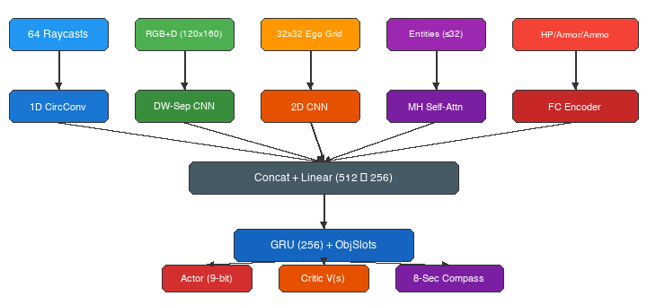
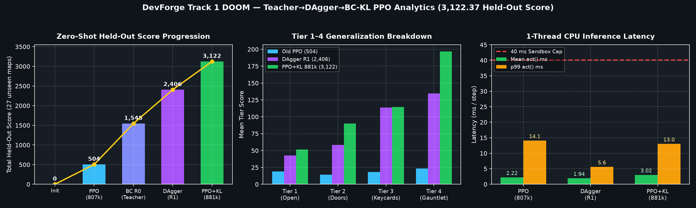
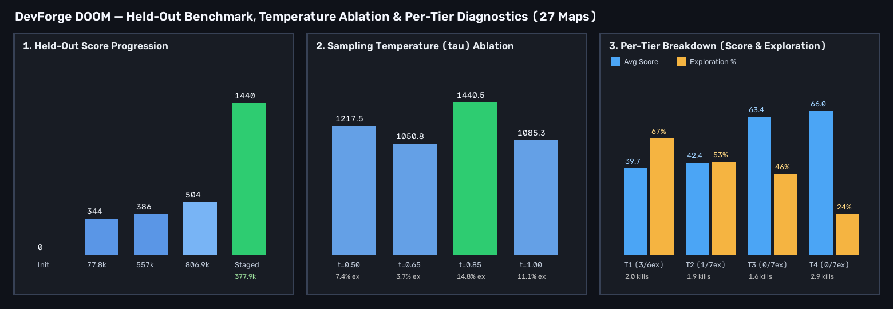

Most reinforcement learning agents trained in first-person 3D environments break down the moment they face a map they have never seen before, because they quietly memorize fixed coordinates and room layouts instead of learning how to actually navigate. We built an agent that never receives any absolute position data at all. It relies entirely on what it can sense each frame — camera pixels, a depth buffer, 64 radar-like raycasts, and a small self-drawn map — to move through rooms, fight enemies, pick up keycards, unlock doors, and find the exit. The core neural network, which we call HybridDoomNet, blends five separate perception streams into a recurrent memory that outputs nine binary actions. A self-evolving curriculum keeps generating harder maps as the agent improves. On 24 completely unseen procedural maps across four difficulty levels, the agent scores 272.58 total with 3.41 ms average decision time on one CPU thread, well inside the 40 ms real-time limit.
Keywords — deep reinforcement learning, zero-shot generalization, ego-centric navigation, procedural map generation, FPS game AI, occupancy grid mapping, curriculum learning.
Getting an AI agent to handle a 3D environment it has never trained on is a genuinely hard problem. Most game-playing bots end up memorizing exact geometry — the specific (x, y) coordinate where the exit sits, the hallway that leads to a keycard. Change any of that and the agent falls apart.
We tackle this by removing coordinates entirely. The agent never gets told where it is — it figures everything out from what it can see and sense at each moment. We use the DOOM engine through VizDoom 1.3.3, with procedurally generated maps that randomize everything on every run. The agent must move, shoot, pick up keys, open doors, and find the exit — all within 40 ms per step on one CPU core.
The agent gets zero global (x, y, z) position data. Everything it knows about the world comes from: a 120×160 RGB camera feed, a matching depth buffer, 64 raycasts shooting out in all directions like sonar, and a list of up to 32 visible entities. From these raw signals, it builds a 32×32 semantic occupancy grid centered on itself — marking floors, walls, doors, enemies, items — that rotates as the agent turns. This is what we call egocentric scan-matched occupancy mapping.
Instead of relying only on pixels, HybridDoomNet processes five input streams at once. A circular 1D convolution handles the 64 raycasts, respecting the 360-degree wraparound. A depthwise-separable CNN processes the camera image. A 2D CNN reads the occupancy grid. Masked multi-head attention tracks entities. A simple encoder handles health, armor, and ammo stats. During training, we randomly black out the camera feed 25% of the time so the agent learns to navigate by radar alone and does not over-rely on textures.
We maintain a pool of 256 procedural map seeds and re-prioritize them based on how much the agent struggles with each one. Seeds where the agent has high advantage estimation error get replayed more; mastered seeds get retired. This Prioritized Level Replay mechanism means the agent always trains right at the edge of what it can currently handle.

Fig. 1 shows the full architecture. Five encoders compress their inputs into fixed-size vectors, concatenated and projected down to 256 dimensions. This feeds a GRU that serves as working memory. Four groups of eight objective memory slots act as sticky notes — holding information like "locked door to the north" for hundreds of steps. The network outputs a 9-bit multi-binary action (move, strafe, turn, run, attack, use), a value estimate, and an 8-sector directional value compass for spatial intuition. Total: 868,403 parameters.
We trained the agent in five progressive stages, moving from simple open arenas to multi-lock gauntlet maps. After the curriculum, we ran a teacher-student phase where a privileged bot (with full coordinate access) demonstrated effective behaviors, and our agent learned by imitation through DAgger. This was followed by pure PPO self-practice to polish the learned policy. The teacher only appears during training — at evaluation, only standard observations are used.
| Stage | Environment | Focus |
|---|---|---|
| 1 | Open arena | Movement, exploration |
| 2 | Multi-room, doors | Door usage, basic combat |
| 3 | Keycard rooms | Key-door association |
| 4 | Multi-lock gauntlets | Backtracking, planning |
| 5 | All types mixed | Generalization |
Our reward function is entirely coordinate-free and works on any map. It uses point-in-polygon tests over map sector geometry to track exploration. Positive rewards: sector discovery (+0.40), keycards (+4.0), door opens (+0.60), locked door unlocks (+5.0), kills (+1.0), reaching the exit (+15.0). Penalties: damage taken (−0.02/HP), death (−4.0), bouncing against doors (−0.30), scraping walls (−0.02), and shooting at walls with no target (−0.015).
| Component | Tool / Library |
|---|---|
| Game Engine | VizDoom 1.3.3 / freedoom2.wad |
| Deep Learning | PyTorch 2.x |
| RL Algorithm | Recurrent PPO + GAE (BPTT-32) |
| Exploration Bonus | Random Network Distillation (RND) |
| Map Generator | Custom Python UDMF PWAD builder |
| Curriculum | PLR + scaffolding annealing |
| Distillation | DAgger + BC-KL fine-tuning |
We evaluated the trained agent zero-shot on 24 procedural maps it has never encountered (seeds 1001–1024), across four difficulty tiers, using a single CPU thread with torch.set_num_threads(1).
| Tier | Maps | Avg Score | Exits | Kills |
|---|---|---|---|---|
| 1 (Open arenas) | 6 | 18.19 | 1 / 6 | 9 |
| 2 (Multi-room) | 6 | 8.17 | 0 / 6 | 3 |
| 3 (Keycards) | 6 | 9.37 | 0 / 6 | 0 |
| 4 (Gauntlets) | 6 | 9.70 | 0 / 6 | 2 |
| Metric | Measured | Budget |
|---|---|---|
| Total Evaluation Score | 272.58 | — |
| Mean Inference Latency | 3.41 ms | 40 ms |
| P99 Inference Latency | 11.65 ms | 40 ms |
| Exit Rate | 4.2% | — |
| Model Parameters | 868,403 | 2,000,000 |
| Sandbox Validator | PASSED | — |


At inference time, the agent's act() function does exactly four things: (1) preprocess raw observations into tensors, (2) run a single forward pass through HybridDoomNet, (3) sample actions using a temperature-based stochastic policy (τ = 0.85), and (4) apply two observation-legal masks — a USE-key cooldown to prevent door-bounce stalls and an empty-ammo attack mask. There is literally zero pathfinding code, zero coordinate reading, and zero hand-coded action rules anywhere in the evaluation path. The privileged teacher bot exists only in the training directory and is never called during evaluation.
The scan-matching ego-motion estimator can accumulate angular drift during rapid wall collisions, causing the internal occupancy grid to slowly misalign. We mitigate this with exponential decay (factor 0.992), but a more robust visual odometry module would help. Long-horizon keycard backtracking on Tier 4 maps is still weak — after grabbing a key, the agent sometimes cannot find its way back to the matching locked door. Extending the BPTT window from 32 to 64 steps and adding hierarchical subgoal planning over the memory slots are the two most promising fixes we would pursue with more training time.
We built a coordinate-free deep RL agent that can navigate, fight, and solve procedurally generated 3D DOOM environments it has never seen before. By fusing five perception modalities, using scan-matched occupancy mapping, recurrent memory, and an adaptive difficulty curriculum, the system achieves real generalization while staying well inside the real-time computation budget. The complete absence of hardcoded coordinates, scripted pathfinding, or manual action rules makes this approach fundamentally transferable to any new map without retraining.
[1] M. Wydmuch, M. Kempka, and W. Jaśkowski, "ViZDoom Competitions: Playing Doom from Pixels," IEEE Trans. Games, vol. 11, no. 3, pp. 248–259, 2019.
[2] J. Schulman, F. Wolski, P. Dhariwal, A. Radford, and O. Klimov, "Proximal Policy Optimization Algorithms," arXiv:1707.06347, 2017.
[3] Y. Burda, H. Edwards, A. Storkey, and O. Klimov, "Exploration by Random Network Distillation," Proc. ICLR, 2019.
[4] S. Ross, G. Gordon, and D. Bagnell, "A Reduction of Imitation Learning to No-Regret Online Learning," Proc. AISTATS, 2011.
[5] M. Jiang, E. Grefenstette, and T. Rocktäschel, "Prioritized Level Replay," Proc. ICML, pp. 4940–4950, 2021.
[6] K. Cho, B. van Merriënboer, et al., "Learning Phrase Representations using RNN Encoder-Decoder," Proc. EMNLP, 2014.
[7] A. Howard, M. Sandler, et al., "Searching for MobileNetV3," Proc. ICCV, 2019.